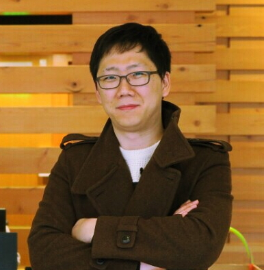

프로그램
발표 수다 톡 스프린트 달리기 노래 춤 장기자랑 & Anything ...
시간표(이미지로 보기)
{kind=link}
| 시간 | 트랙 1 | 트랙 2 | 트랙 3 |
|---|---|---|---|
| 9:00 ~ 10:00 | 접수 및 입장 | ||
| 9:30 ~ 10:10 | 비트윈 데이터분석팀의 하루 김상우 |
데이터 과학자가 일 잘 하는 법에 대한 흔하지 않은 이야기 이주형 |
공연 : 무중력인간 (상상발전소) |
| 10:20 ~ 11:00 | 울어도 돼, 사실 MNIST는 없거든 황준식 |
스포츠 빅데이터 활용사례와 시사점 김명락 |
데이터야 안전하게 놀아보자 성동찬 |
| 11:10~11:50 | 머신러닝을 활용한 상품 매칭/추천 김동열 |
강남출근길에 정자/판교역 내릴 사람 예측하기 최규민 |
MySQL 디비에 자바(JDBC)가 접속하면 벌어지는 일들을 알아보아요 조현종 |
| 점심 식사 | 공연 : 무중력인간 (상상발전소) |
공연 : 지신밟기(음마갱깽) |
도시락 제공(혼밥 없는 데놀) |
| 12:50~13:10 | 엔지니어 관점에서 바라본 데이터 시각화 한성민 |
싱싱한 재료를 제품으로, 데이터를 데이터 제품으로 이광춘 |
창조 데이터: 데이터 수집 어디까지 해봤니? 김태준 |
| 13:20~13:40 | 개발 설계 해본 함수모형 회귀분석 및 극값데이터마이닝알고리즘과 알바셀파 프로젝트 김석준 |
인공신경망을 활용한 축구선수 팀 추천하기 장준환 |
쌓는다고 다 데이터인가? - 로그 기깔나게 잘 디자인하는 법 백정상 |
| 13:50~14:30 | "머신러닝 무엇이 중요한가?" 삽질로 경험한 머신러닝 시스템 아키텍쳐 조대협 |
음악 데이터 수집부터 웹 어플리케이션까지 금상은 / 이종필 |
검색엔진이 데이터를 다루는 방법 김종민 |
| 14:40~15:20 | - | 데이터, 유치원 그리고 머신러닝 최승준 |
노가다 없이 한국어 뉴스/댓글 데이터 분석하기 김현중 |
| 15:30~16:10 | 인공신경망을 속이는 데이터 - Adversarial Machine Learning 윤성국 |
비물질적인 데이터를 어떻게 이해해야하나! 한상곤 |
커머스 로그 통합 시스템 개발 분투기 (수집부터 모니터링까지) 전수현 |
| 16:20~16:40 | 금융권 오픈소스 및 머신러닝 도입 이야기 김형준 |
제조 데이터의 특징 이해와 분석과 엔지니어링 융합에 대하여 박준용 |
데이터의 HA/DR 사고사례와 교훈 이진현 |
| 16:50~17:30 | 머신러닝/딥러닝 학습시 수학 공부법 이창신 |
데이터로 시작하는 작심삼일 (Feat. 구글 데이터 스튜디오) 맹윤호 |
스타크래프트2 강화학습 송호연 |
| 17:40~18:20 | AI업무 징징징 임도형 |
4차산업혁명, 인공지능 분석알고리즘의 이해와 만성질환자/일반인을 위한 시공간 상황 데이터 분석 서비스 경험 공유 이혜영 |
원숭이 뇌를 측정하려다 역조련 당한 이야기 심진우 |
| 18:20~19:15 | 공연 & 불금 홍대 데이터 파티 !!! 두인디 & 도마 |
||
| 19:15~20:00 | 재미가 우선 패널토의 - 데이터수다(데수다) 김성훈 & 샐리 & 이창신 & ... |
편한한 수다 & 데이터 ( "놀자"가 중심이고 "데이터"는 거들 뿐 ) |
|
| 20:00 ~ 22:00 | 놀자톡 - 주제 상관없이 3분 발언 선착순 신청 |
놀자톡 인근 게스트하우스 사전신청(페이스북 메신져 문의) |
부대일정
트레이닝 & 스프린트
| 이름 | 설명 | 공간 |
|---|---|---|
| Scouter APM |
오픈소스 APM(Application performance monitoring)인 Scouter에 대한 튜토리얼 세션입니다.
기본적인 사용법을 넘어 우리 시스템에 맞춤형으로 커스터마이징 할 수 있는 고급 사용법과 알고 있으면 아주 편한 깨알 팁들, 그리고 Scouter에 Contribution을 하고 Commiter가 되기 위한 방법과 노하우를 전수해 드립니다.
|
한빛 미디어의 어딘가 멋진 곳 튜토리얼 13:20~14:20 스프린트 14:20~16:20 |
| Please. PR. | ||
튜토리얼
| 이름 | 설명 | 공간 |
|---|---|---|
| Apache Zeppelin |
Apache Zeppelin 은 빅데이터 세계에서 Visualization 을 담당하는 오픈소스 Notebook 프로젝트입니다. 본 튜토리얼에서는 Zeppelin 의 기본적인 사용법을 소개하고, 어떻게 하면 회사 내에 있는 데이터를 Zeppelin 으로 어떻게 로딩하고, 화면으로 그려낼 수 있는지 까지를 다룹니다.
|
한빛 미디어의 어딘가 멋진 곳
저녁 7:15 ~ 8:15 |
| Please. PR. | ||
놀자톤 - Hackathon, Without competition
| 이름 | 주제 | 공간 |
|---|---|---|
| 데놀 놀자톤 | 놀다 지치면 코딩 & 꿀짬 | 게스트하우스 |
놀자톡 - Lightning Talk
| 이름 | 설명 | 공간 |
|---|---|---|
| Please. PR. | ||
| Please. PR. | ||
연사소개

김종민
Elastic 테크 에반젤리스트
검색엔진 Elasticsearch 를 개발하는 Elastic사의 입개발자 입니다.
루씬 기반의 검색엔진에서 데이터의 저장 및 검색 그리고 클러스터링 방식에 대해서 설명을 하려고 합니다.
최근에는 검색엔진을 데이터 분석에 이용하는 사례가 늘고 있기에 앞으로 데이터를 가지고 놀려는 분들께 유용한 정보가 되었으면 합니다.
김종민님을 더 알고 싶다면?
최규민
내추럴 본 데이터 수집,분석쟁이
매일 아침 신분당선을 타고 동천역에서 잠실역까지 출근을 하는데 매일 하는 고민중 하나가 동천역->강남역 지하철에서 정자/판교역에 내릴 선택하여 앉아서 가는것입니다.
그래서 2달 가량 수기로 성별/자리위치/하는행동/이어폰사용여부/복장/나이 등을 기록했고
이를 기반으로 정자/판교역 내리는 사람을 특징을 분석하고,
위의 특징값으로 정자/판교역에 내리는 사람을 예측하는 과정과 결과에 대하여 공유를 하고자 합니다.
최규민님을 더 알고 싶다면?

이주형
Google Software Engineer
데이터 과학자로 일 해오다가 최근에는 개발 실력의 부족함을 느끼고 개발업무로 바꿔 좌충우돌하고 있습니다. 데이터를 통해 사람들의 습성을 발견하거나 사람들의 생활을 편리하게 하는일에 관심이 많습니다. 데이터 과학에 대해서 굉장히 있어보이는 이야기만 나도는 현실에 불만을 가지고 있어 틈만나면 그 현실과 어려움에 대해서 이야기 하고 다닙니다. 그래서 데이터 과학에서 삽질하신 분들과 이야기 하는것을 좋아하고 이분들과 함께 어떻게 하면 현실의 일을 잘 할 수 있을까에 대해 늘 고민합니다.
이주형님은 더 알려지길 원치 않습니다

윤성국
코딩이랑 무관합니다만, 연구실에서 열심히 노역(?)하고 있는 평범하고 싶은(=_=?) 대학생입니다.
저는 많은 분들이 연구하는 방향과 반대로(?) 연구하고 있습니다. 다른 분들은 어떻게 해서든 인공지능의 정확도를 높이려 하지만, 저는 정확도를
낮추게 하는 방법을 찾아해맨답니다. 무슨 소린지 모르시겠다구요? 저는 머신러닝을 공격하는 데이터를 만들어내서
머신러닝이 얼마나 보안에 취약한지를 알리는 데이터 과학자들 뚜껑열리게 하는(?) 무시무시한 연구를 하고 있거든요. 여러분이 만든 인공지능 모델은 안전한가요?
여러분들의 모델이 어떻게 공격받을 수 있고, 어떻게 내 모델을 지킬 것인지를 같이 고민해보는 자리가 되었으면 합니다.
아!? 위에서 눈치 채셨겠지만 저는 개발자그룹(개발자그룹이었어?) 코딩이랑 무관합니다만, 에서 어쩌다보니(=_=!) 종신운영자로 활동하고 있습니다.
윤성국님을 더 알고 싶다면?

김석준
수학과에서 컴퓨터를 복수전공하고 있는 평범한 대학생입니다. 제가 소개해드릴 내용은 tensorflow를 사용하지 않고 자바로 선형회귀(Linear Regression)를 변형시켜 설계 및 개발해본 함수모형회귀와 극값을 이용한 데이터마이닝을 소개하고 이를 이용하여 아르바이트 데이터를 분석해보았던 알바셀파 프로젝트를 소개하려고 합니다. 함께 좋은 시간을 보냈으면 좋겠습니다!
김석준님을 더 알고 싶다면?

김명락
야구를 중심으로 빅데이터가 어떻게 활용되고 있는지에 대해 발표하려고 합니다. 프로야구팀을 직접 운영하지 못하는 일반 야구팬들도 사회인야구팀 운영을 할 때 빅데이터를 활용해 볼 수 있고, Fantasy Baseball이라는 게임 장르를 통해 빅데이터를 활용한 라인업 구성을 직접 해볼 수 있습니다. 스포츠 빅데이터는 소수의 프로스포츠 운영 조직에게만 해당되는 얘기가 아니라, 스포츠에 관심있는 모든 팬들도 활용할 수 있는 것이고, 스포츠 빅데이터의 성과는 다른 분야에서도 활용될 수 있다는 것이 발표의 요지입니다.
김명락님을 더 알고 싶다면?

이광춘
인공지능, 데이터과학, 클라우드 등과 거리가 있어 보이는 국제무역 FTA 원산지관리 및 차량용 반도체 개발구매를 10여년 경험한 후에 전국민 오픈 소프트웨어 교육을 위해 xwMOOC 프로젝트를 진행한 후에 현재는 웹젠에서 데이터 과학자로 수많은 데이터와 인공지능 봇들과 더불어 살고 있다. 전국민 오픈 통계/소프트웨어/컴퓨터 교육을 위해 xwMOOC 프로젝트로 지금까지 10여권의 책을 번역 직접 저작해서 지식과 경험을 공유하고 있다. CS Unplugged (컴퓨터 과학 언플러그드) 3.1 버전, 리보그/러플(Rur-Ple) 파이썬 배우기: 러플로 아이들이 놀기!, 소프트웨어 카펜트리, 정보교육을 위한 파이썬, R 팩키지, 통계적 사고하기, R 데이터 과학, 라즈베리 파이 등.
이광춘님을 더 알고 싶다면?

장준환
안녕하세요. 현재 국제스포츠레저학부를 전공하고 있는 평범한 대학생입니다. 그 동안 했던 프로젝트 가운데 "텐서플로우를 활용한 축구선수 팀 추천하기" 에 대해 소개하는 시간을 가지려고 합니다. 그리고 비전공자이기에 경험했던 어려움들에 대해서도 서로 얘기해보려고 합니다 :)
장준환님을 더 알고 싶다면?

박준용
제조업 현장에서 데이터라는 금을 찾기 위해 부단히 땅을 파고 있는 데이터 과학자
빅데이터 엔지니어로서 다년간 경력을 쌓다가 몇 년 전 데이터마이닝의 매력에 푹 빠져 통계 공부를 시작하였고 현재는 제조업에서 분석업무를 수행 중에 있습니다.
제조업 데이터 특성과 소개와 함께 데이터 분석부터 시스템화의 과정 중에 벌어지는 분석가와 개발자들의 동상이몽에 대해 제가 듣고 경험한 것들을 공유하고자 합니다.
이를 바탕으로 진짜 빅(Big)한 데이터를 다룰 때 현장에서 분석가와 개발자가 서로 살펴봐야 할 것들은 무엇일지 또, 빅데이터 시대에 경쟁력을 갖추기 위해 필요한 역량은 어떻게 변화할 것인지 같이 생각해 봤으면 합니다.
심도 있는 기술 얘기 보다는 제조업에서 일하는 경험담 들려 드리겠습니다. 데이터분석가 또는 엔지니어를 꿈꾸는 학생분들과의 소통 대환영입니다.
박준용님을 더 알고 싶다면?

김형준
인지과학을 활용하는 데이터 과학자
다양한 신용정보가 있는 금융회사에서 머신러닝을 이용해 실제 모형을 만든 경험담을 얘기하고자 합니다. 인터넷이 되지 않으며
R과 PYTHON이 없던 기존 시스템에서 이를 도입하면서 겪었던 삽질, 연구하면서 겪었던 삽질, 개발하면서 겪었던 삽질 등을 들려드립니다. 그리고 실제로 머신러닝을
활용하면서 생각할 점들을 공유하고 토론하고 싶습니다. 추가로 R과 PYTHON의 도입을 통해 기존 업무를 자동화하고 효율화한 얘기도 하려 합니다.
김형준님을 더 알고 싶다면?

맹윤호
데이터로 시작하는 작심삼일 (Feat. 구글 데이터 스튜디오)
우리는 가끔 작심삼일을 하곤 합니다. 어떤 작심삼일은 성공하기도 하지만 대부분의 작심삼일은
정말로 3일만에 끝나 다시금 평범한 일상으로 돌아오곤 하죠. 이러한 결심의 성공률을 높이고자 스스로의 일상을 체크하고자 했습니다. 처음에는 구글 캘린더를 사용해
매시간 내가 어떻게 시간을 쓰는지 부터 시작해서 어떤 상황에서 계획의 이행률이 높은지, 집중력은 어떤지, 언제 나는 가장 행복한지, 오늘의 중요한 순간들을 종합해봤습니다.
오늘 하루를 온전히 살아내기 위한 데이터 분석 함께 시작해 보시죠!
맹윤호님을 더 알고 싶다면?
한성민
엔지니어!! 까지는 아니고 서비스를 초기부터 끝까지 밀고나가는 개발자입니다. 비즈니스 인텔리전스 서비스를 구축하면서 포커스를 가지는 데이터 시각화에 대해서 가볍고 눈이 즐거운(?) 시간을 만들어 보고자 합니다.
한성민님을 더 알고 싶다면?

이창신
프로그래밍을 위한 별도의 수학을 다루기 전에, 이미 배웠던(물론 안배웠거나 오래됐을 수도 있습니다) 수학인 집합, 명제, 함수 등이 프로그래밍에 어떻게 쓰이는지 살펴봅니다. 머신러닝/딥러닝 학습에 나오는 행렬, 미적분과 확률 통계 등은 배운 것과 배울 것이 섞여 있을 수도 있습니다. 앞으로 어떤 수학 공부를 하면 좋을지도 말씀드리고 싶고요. 더불어, 최근 번역 작업과 미국 생활에 대한 얘기도 하려 합니다.
이창신님을 더 알고 싶다면?

백정상
게임 서버 프로그래머 출신 데이터 엔지니어.
재미있는 나만의 독창적인 게임을 만들기 위해 게임 업계에 입문하여, 스타트업 창업을 통해 실제 나만의 게임을 만들 기회를 얻게 되었다. 그 결과 게임을 재미있게
만드는 능력이 없음을 깨닫고 게임을 잘 만드는 사람들을 도와주는 엔지니어가 되기로 결심한다. 현재는 데이터 엔지니어로서 어떻게 하면 모바일 게임이 안정적으로 더 오래
사랑받을 수 있는지 데이터 기반으로 연구하는 중이다.
백정상님을 더 알고 싶다면?
성동찬
10년전 (장애로부터) 살기 위해 DB를 시작했던 게으른 개발자! 절대 깨지지 않는 시스템을 향해 끊임없이 정진하는 개발하는 DBA로 은행에 정착해봅니다. 발표 때면 항상 처음 60초간 얼굴 경련하는 긴장쟁이에 웃음코드를 넣어도 애드립이 안따라주는 어처구니 없는 센스쟁이여서 결국에는 몸으로 웃기는 막장 "몸개그"꾼이지만.. 적어도 서비스의 품질에서만큼은 절대로 양보 못합니다. (장담컨대, 실물이 더 나을지도 몰라요.)
목표한 품질 달성을 위해 고민했던 썰~ 아낌없이 풀어봅니다. :)
고객님, 성동찬 행원을 더 알고 싶다면?

금상은 / 이종필
'음악'을 분석하는 KAIST 박사과정생들.
클라리넷, 피아노, 기타까지 능숙하게 연주하는, 음악 자체를 사랑하는 상은.
EDM, 미디어아트를 감상하며 즐기다가 직접 만들고 있는 종필.
하지만 뼛 속까지 전자 공학도인 그들은 음악을 딥러닝으로 분석해보기 시작하였습니다.
음악 데이터 수집부터 분석 알고리즘, 그리고 웹 어플리케이션까지의 전 연구 과정을 공유코자 합니다.
금상은님을 더 알고 싶다면?
이종필님을 더 알고 싶다면?

김상우
사랑을 전달하는 메신저 앱 비트윈(Between)의 데이터 과학자!
사랑 가득한 그곳에서 온 그는 과연 어떤 이야기를 들려주게 될 것인가?! 그의 발표를 들어본 사람들은 "저런 걸 말해도 돼...?!"라는 반응을 보인다.
과연 어떤 이야기를 들려주길래 그러는 것일까? 자세한 이야기는 데이터야놀자에서!
김상우님을 더 알고 싶다면?

최승준
미디어아티스트, 한미유치원 설립자, (전) 국민대학교 시각디자인학과 조교수.
유치원에서부터 대학까지 다양한 층위의 교육에 관한 경험이 있다. 대학의 교육도 유치원에서 배운 '발현적 교육과정'방식으로 학생들이 준 매 수업에 관한
피드백 데이터를 바탕으로 운영했고, 대학에서의 이 경험을 다시 유치원에서 적용하기 위해, 특히 머신러닝의 도움을 받기 위해 노력 중이다. 수년간 쌓은 데이터가
있지만 과연 이 데이터 활용에 머신러닝을 적용할 수 있을지, 기계의 학습에서 배우는 인간의 학습에 관한 영감을 얻는데 그칠지 스스로도 궁금해 하며 실험하고 있다.
최승준님을 더 알고 싶다면?

한상곤
우리가 손쉽게 접하는 현대의 다양한 예술작품 속에서 "인간과 인간" 그리고 "인간과 물질"의 상호작용을 어떻게 해석했지 알아보는 기회를 가져보고자 합니다. 그리고 90년대 발표된 "신세기 GPX 사이버 포뮬러"에 제시된 "기계와 인간"의 상호작용 방법을 중심으로 기계학습 혹은 인공지능에 대한 의견을 나눠보는 시간을 가져보았으면 합니다.
한상곤님을 더 알고 싶다면?

김성훈
홍콩과기대(Hong Kong University of Science and Technology; HKUST) 컴퓨터공학과 교수.
딥러닝에 관심 있는
모두가 아는 바로 그 강의 "모두를 위한 머신러닝/딥러닝" 목소리의 주인공. 데이터야놀자에서는 목소리뿐만 아니라 생생한 표정까지 볼 수 있다...! 또한, 강의가
아닌 데이터에 대한 "수다"를 떨어주실 예정. 교수님의 "수다"가 궁금한 당신, 데이터야놀자로 오라! 세계적인 석학으로 인정받는 그는 2018년에는 네이버 클로바
AI 연구팀에 합류하게 될 예정이다.
김성훈님을 더 알고 싶다면?

전수현
'커머스 (commerce)' 데이터 경제를 구축하는 개발자. 세상을 바꾸는 기술은 로그로부터 시작된다. 오늘은 그 시작의 첫 단계인, 로그 수집 및 통합에 대해 자세히 이야기 해보자.
전수현님을 더 알고 싶다면?
임도형
오래전 신경망을 전공했지만 그 당시 관련 일을 못구하고 SW개발만 해오다가, 이제 AI가 관심을 받으면서 다시 AI를 하고 있는 개발자. 개발을 이왕 하려면 삽질 안하고 성과 좋게 하려고 개발문화를 그렇게 붙잡았던 개발자. 관리는 거부하고 실무만 하겠다고 우기는 철없는. 딥러닝이 그렇게 대단한 거 아니고, 사용법만 살짝 파악해서 해도 된다고 우기는.
임도형님을 더 알고 싶다면?
전시
NEUROSCAPE - 박승순, 이종필
NEUROSCAPE from Seungsoon Park on Vimeo.
NEUROSCAPE는 Neuro(신경)와 Landscape(풍경)의 합성어로, 인공신경망에 의해 재구성된 기억-풍경을 의미한다. 자연 또는 도시 풍경 이미지를 인공지능 알고리즘으로 분석한 후 이에 상응하는 사운드/이미지를 자동으로 연동하는 시스템을 개발하여, 미디어 인스톨레이션 및 실험적인 음악 퍼포먼스 형태로 구현한다. 이 작품은 인간이 생각하지 못할 수도 있는 영역을 발견하여 감각의 확장 가능성을 제시함과 동시에 딥러닝 알고리즘이 지니고 있는 수많은 오류를 병치하여 양면성을 드러내고, 인공지능의 환상에서 벗어나 ‘인간이 기술을 어떻게 바라보고 활용할 수 있는지’에 관한 근본적인 질문을 던지고자 한다.

박승순
박승순은 뉴미디어 아티스트이자 전자음악가 RADIOPHONICS로 활동 중이며 콜렉티브 ‘아이디언(IDEAN)‘의 공동 설립자이기도
하다. 그는 음악과 기술을 매개로 인간이 우주 또는 자연과 상호작용할 수 있는 방법에 대하여 연구 및 작업을 이어오고 있다.
최근에는 알고리즘 개발자 이종필과 함께 인공지능 알고리즘(머신러닝 또는 딥러닝)을 음악 또는 시각 예술 분야에 적용하여
작품을 생성하는 방법을 연구하기 시작하였고, 이에 대한 첫 번째 실험 및 작품으로 풍경 이미지를 분석하고 이에 적합한 소리를 자동으로 재생하는 시스템 NEUROSCAPE를
개발하여, ‘GAS 2017’ 전시에서 처음 작품을 공개하였다.